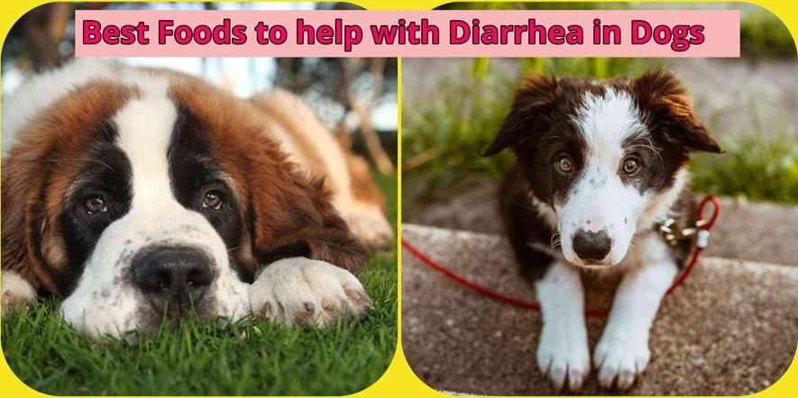

What to feed your dog when they have diarrhea
What is diarrhea?
Diarrhea is defined as a loose or watery stool that happens more frequently than it usually does. Watch to see if the stool continues for more than one time being watery.
Best foods to feed your dog during diarrhea

If diarrhea in your dog is mild and does not seem to be of an immediate emergency, then treating your dog's diarrhea by switching his/her diet will help clear up the symptoms easily. Feed your dog these foods to help with diarrhea.

- White Rice
- Rice Water
- Mashed Boiled Potatoes
- Oatmeal
- Eggs
- Vitamins A, B2, B5, B6, B12, D, E, and K
- Folate
- Phosphorous
- Selenium
- Zinc
- Calcium
- Chicken (Without the skin)
- Pumpkin
- Yogurt
- Slippery Elm
Giving your dog human food isn't always the best idea. But when it comes down to helping your furry friend with diarrhea, white rice is should be your number one go-to food. White rice is good for your dog's stomach as it is one type of food that is very easy to digest and it is very low in fiber. Fiber helps humans and animals pass stools easier and that would not help with diarrhea.
How much rice to feed dog with diarrhea
The amount of rice you would feed your dog during diarrhea will be dependent on what you usually feed during meal time. If you usually feed your dog one cup of dog food, then feed your dog one cup of white rice. To spice things up for your dog, you could also substitute 1/3 of the rice with with boiled chicken mixed-in.
After boiling some rice, before letting it fully cook, you can drain the water and let it cool before giving it to your dog. Rice water provides needed electrolytes for your dog.
Feeding your dog boiled mashed potatoes when they have diarrhea is good because it provides needs vitamins and minerals to keep your dog healthy. Mashed boiled potatoes provide your dogs with Vitamin B6, Vitamin C, magnesium, potassium, and fiber. However, you should only feed your dog this type of food during diarrhea or only occasionally as it is high in starch and sugar. Sugar and starch are the perfect combinations to start too much weight gain.
Oatmeal contains a fiber known as soluble fiber. Soluble fiber helps to slow gastric emptying and also helps with controlling diarrhea. This type of fiber is also very helpful to older dogs with irregular bowel movement issues.
Be sure to cook the oatmeal as half-cooked or raw oatmeal can be harmful to dogs, especially ones that are experiencing diarrhea.
Eggs are another simple food to prepare for your dog during diarrhea as it provides many needed proteins, minerals, and vitamins.
Eggs Contain
Eggs should always be fed to your dog scrambled or boiled, never raw. Raw eggs have the potential of passing on bacteria to your dog such as salmonella. Salmonella is reponsible for many food poisoning cases in dogs. When preparing eggs for your dog, boil it, or scramble it then mix it in with white rice. Be sure not to add any type of flavoring or seasonings.
Chicken is recommended by many veterinary experts. But the chicken will have to be boneless and boiled. Do not fry the chicken as this would introduce different types of oils to your dog's tummy.
Pumpkin is a great food to eat during diarrhea as it helps to calm upset stomachs. This food is also a recommended food by the American Kennel Club
If your dog can tolerate yogurt then this it will be beneficial to your dog's diarrhea as it provides bacteria that will help the gut to heal.
Dogs like the taste of slippery elm which is a good thing. Slippery elm is one of the most safe herbs for your dog to ingest. Slippery elm has been used for many conditions such as indigestion, irritable bowel syndrome, and gastritis. If you feed this herb to your dog, it will help to soothe your dog's gut.
What is the most common cause of diarrhea in dogs?
- Drinking contaminated water
- Change in diet
The most common cause of diarrhea in dogs is due to a virus they picked up somewhere. Places dogs can get viruses from are from drinking water from the ground outside if they become thirsty and there is not any water in their water bowl.
Simply changing your dog's diet can cause his/her bowel movement to change in texture. It takes 1 to 3 days for your dogs stomach to get used to the different amounts of proteins and minerals within the new food.
| Cause Of Diarrhea | Type Of Diarrhea |
|---|---|
| Inflammatory Bowel Diseases | Chronic diarrhea |
| Bacterial or viral infections | Acute and chronic diarrhea |
| Dietary indiscretion | Acute diarrhea |
| Stress | Acute and chronic diarrhea |
| Exercise intolerance | Acute diarrhea |
What home remedy can i give my dog for diarrhea?
The simplest home remedies you can give your dog for diarrhea are white rice, white rice water, and canned pumpkin. These home remedies will help clear up mild diarrhea in most dogs.
Should i starve my dog if he has diarrhea
You should never starve your dog. You should only put your dog on a 12-24 Hour fast. This will give your dog's digestive system enough time to heal and rest. Remember, fasting is only for dogs and not puppies.
What can I give my dog for diarrhea over the counter?
Dogs can ingest medicine just like us humans do. One medicine in particular is Imodium (Loperamide).
When should i be concerned about my dog's diarrhea?
The time to get concerned about your dog's diarrhea is whenever you confirm that the symptom is getting worse over 1-3 days continually.
What to do when your dog has diarrhea but acts fine
The first thing to do when your dog has diarrhea but acts fine is to see if a diet change helps.
My dog has diarrhea, now what do i do?
The first good advice i would give to anyone in this position is to not panic. Diarrhea in dogs does not mean that the world is coming to an end. Watch your dog for a day or two to see if the condition changes for better or worst. If it changes for better, then feed him/her the foods listed above. If however, the condition changes for the worse, then you need to contact a veterinarian.
What Does The Color Of My Dog’s Poop Mean?
A dog's poop can tell you many things about what is going on in their body. Below i will go over the different colors and what they mean.
- Orange Poop
- Blue Poop
- White Poop
- Yellow Poop
- Changes in the dog's liver
- Coccidia (Parasite)
- Pathogenic bacteria overgrowth
- Bile turns poop brown and if poop passes through the system too fast then it might not get to be colored brown
- Black Poop
- Grey Poop
Orange poop from your dog just simply means that ypour dog has eaten Something with some sort of food coloring or may indicate that small amounts of blood is in the stool. This can be rectified by providing your dog with a bland diet or putting him/her on day fast.
This color poop should always be treated as an emergency. This type of poop could mean that your dog has ingested rat poison.
White poop in your dog is a sign of tapeworms.
Yellow poop in your dog means that there is something wrong. The main causes of yellow poop in dogs is caused by these:
Passing black or dark brown poop can mean that there is blood mixed in with the poop. This type of stool can be tge sign of something serious.
Grey or greasy stool is usually a sign of biliary or pancreas issue.
Which Foods can trigger diarrhea in dogs?
Some foods are likely to cause diarrhea in dogs. Some of these foods are fatty foods. Dogs cannot process fatty foods as good as humans and as such will sometimes cause illnesses such as pancreatitis. Other types of foods that can cause diarrhea in dogs are milk, and other types of dairy products.
Foods to avoid feeding your dog
Some foods that are not harmful to humans are harmful to dogs. Foods such as raisins, grapes, garlic, macadamia nuts, onions, alcohol, chocolate and coffee. It is also wise to not feed your dogs scraps from the dinner table.
Soup for soothing stomach
- Add carrots, 3 chicken thighs, and celery to 6 cups of water.
- Boil, then let it simmer for 1-2 Hours.
- Remove all skin from chicken pieces.
- Use the broth to cook vegetables like carrots.
- Place soup on counter and allow to cool before serving.
If you dog will drink the broth by itself, then you can offer it as is. However, if your dog is of the picky type, you can place small portions of chicken and vegetables in the broth then serve. Large dogs should be served 1/2 to to cup, while small dogs should only be given a few teaspoons at a time.
Diarrhea Prevention
Diarrhea in some cases is unavoidable. However, there are certain preventative measures you can put in place to reduce the chances of it happening. After all, nobody wants to see their dogs sad because of diarrhea.
- Provide adequate amount of water at all times
- Ensure vaccinations are up to date
- Make sure your dog cannot reach inside the trash
- Keep your dog away from feces when you take him/her out walking
- Try to keep your dog happy and stress free
- Try not to let your dog play with toys that are small enough
- If your dog likes to scavenge, try to stop it from an early age
How long does dog diarrhea last?
Its always best to know how long diarrhea in dogs last as this will give you an idea of whether or not the condition is more serious than you think. Diarrhea in dogs usually last between 2 and 4 days. Any more than 4 days and i would suggest visiting a veterinarian. But withing the first to third day, try to feed your dog the different types of foods listed above.
What if my dog is getting diarrhea every few weeks
If your dog keeps on getting diarrhea every couple weeks, then, this means that the underlying cause of the diarrhea isn't being taken care of. Your dog could possibly be consuming water from a contaminated source, or you have changed his/her diet to something his/her gut will never get used to.
Good reasons to contact a veterinarian
There are times when you should immediately contact your veterinarian. Below is a list of symptoms that should tell you to contact yourn veterinarian immediately.
- When your dog looks bloated
- Your dog vomits repeatedly
- Your dog has eaten something harmful such as rat poison
- There is huge amounts of blood in your dog's stool
- If your dog is lethargic
Diarrhea in dogs is not unpopular, and know what to feed your dog when they have it is essential. Not only knowing what to feed your dog during diarrhea, but also knowing what steps to take if certain symptoms worsens. Knowing the different color stool that your dog passes is also a great way to quickly diagnose and treat your dog.